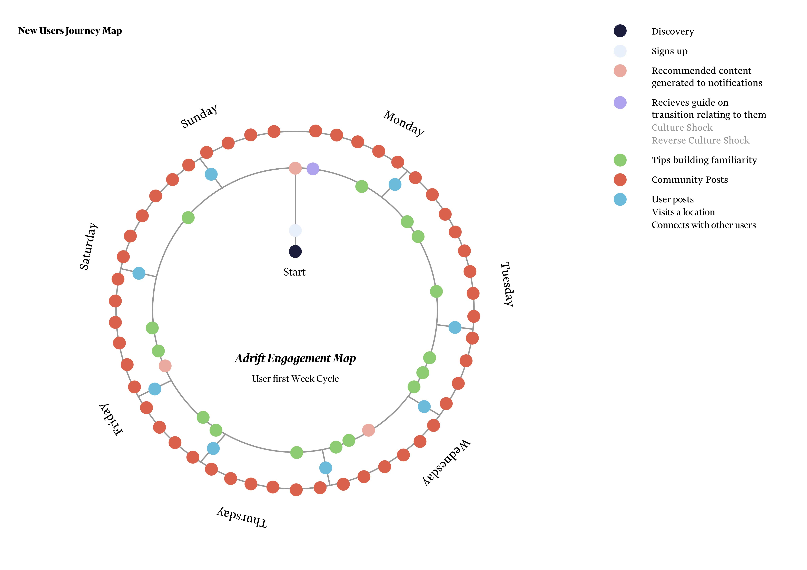
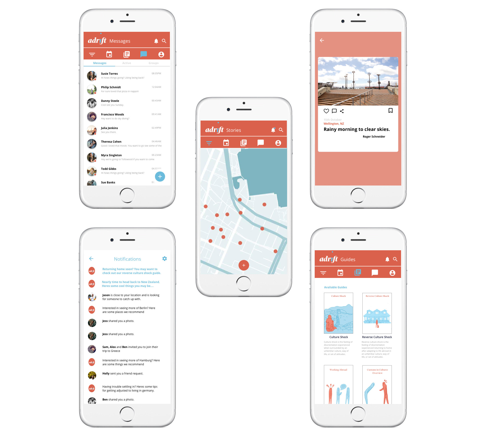
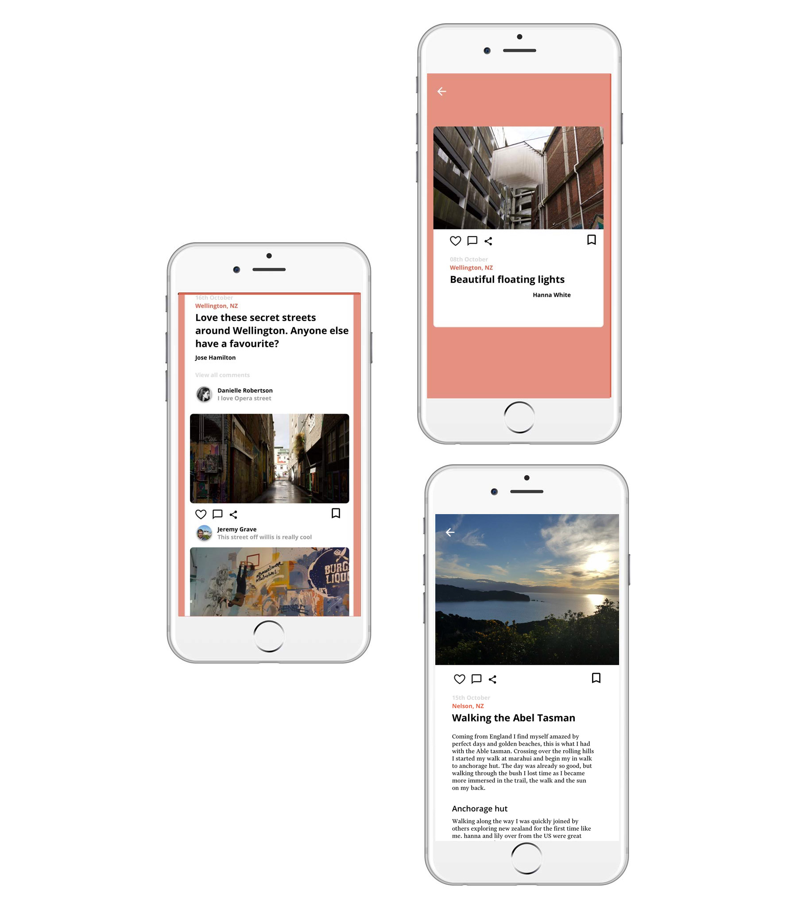

Adrift
Having recently participated in a exchange abroad I had experienced a seperation from home and a transition of culture shock into my new culture in Germany. The surprise of having to once again adapt to home was caught me completely by surprise and lead me to ask ‘How design could be used in helping people transition between cultures?’ Using this as my research question for my final year project I found that reverse culture shock was a important under addressed issue that is becoming increasingly more common with travel and working abroad which can impact peoples performance, mental state and socialization. While the solutions to this problem are limited the biggest factor that can create a positive impact to returners is being able to communicate and share their experiences abroad. Family and friends that we love often unintentionally brush over our time away after our brief moment of fame in our return. This is a difficult reality for many returners to face, and while home may not understand your struggle in coming home many returners find comfort in socializing with other travelers to express their feelings and share their adventures abroad.
The final solution Adrift explores how experience design can be used to simplify transitions between cultures for travelers. Users are able to share their experiences, connect with others and engage with their location. Adrift also offers guides for adapting to different situations, minimizing mental and psychological strains associated with living abroad.


